Protein handling and organelles
You know the metabolism: glycolysis, the TCA cycle and oxidative phosphorylation. Today we look at the membranes and the machines that turn food into ATP, and at the other jobs of mitochondria.
After this lecture you can:
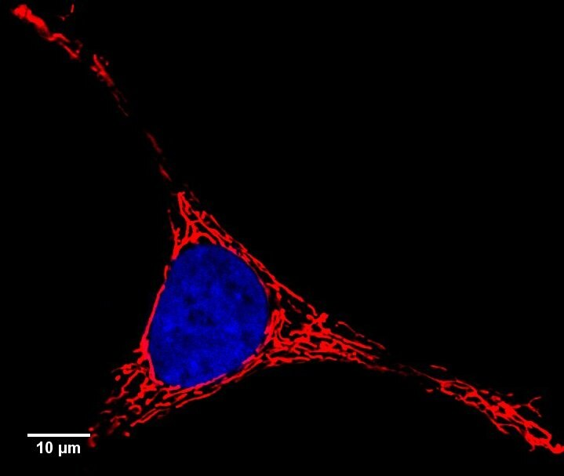
Mitochondria (red) in a living HeLa cell, with the nucleus (blue). Scale bar 10 µm.
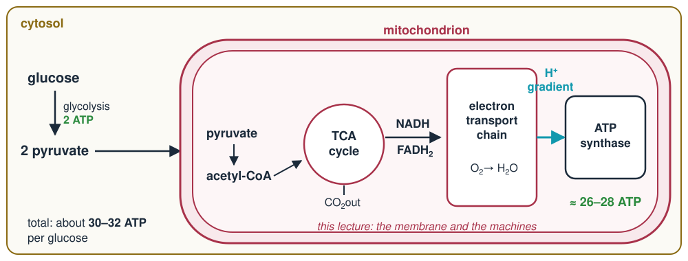
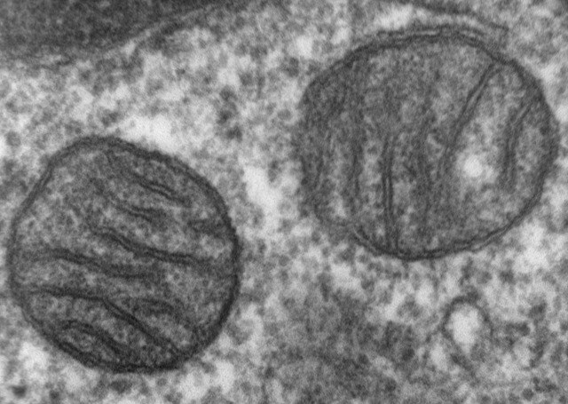
Two mitochondria in a lung cell, transmission electron microscope. Note the outer membrane and the folded inner membrane (cristae).
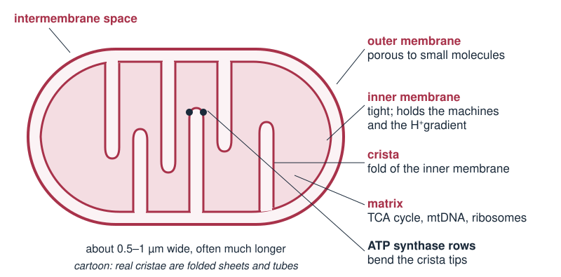
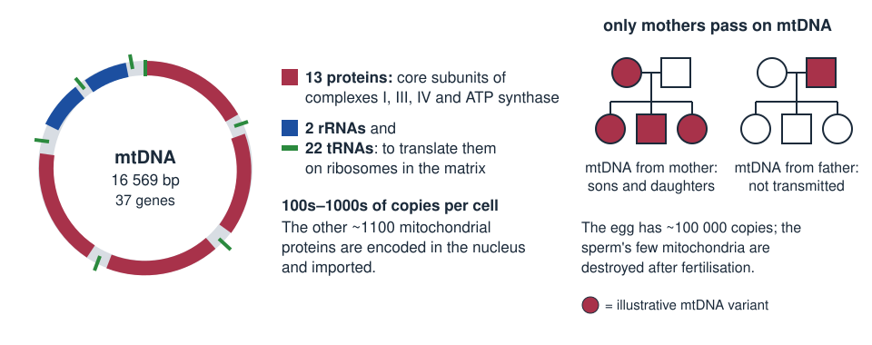
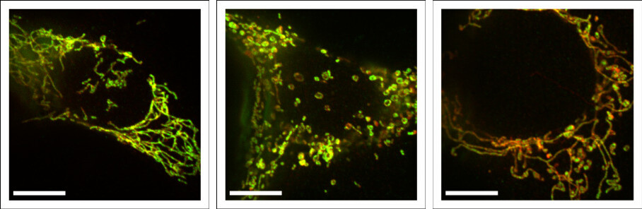
Mouse fibroblasts, outer membrane (red) and matrix (green). Left: control. Middle: after the uncoupler CCCP (30 min). Right: a cell without DRP1, same CCCP. Scale bars 10 µm.
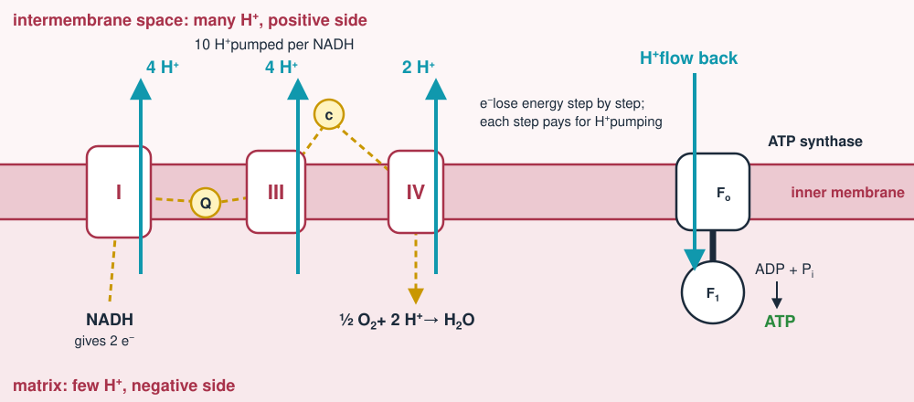
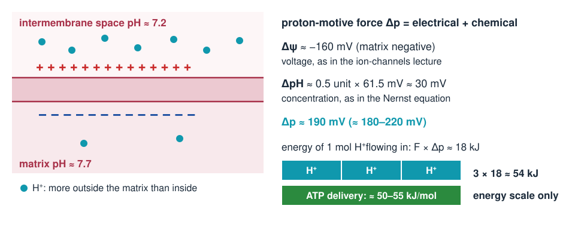
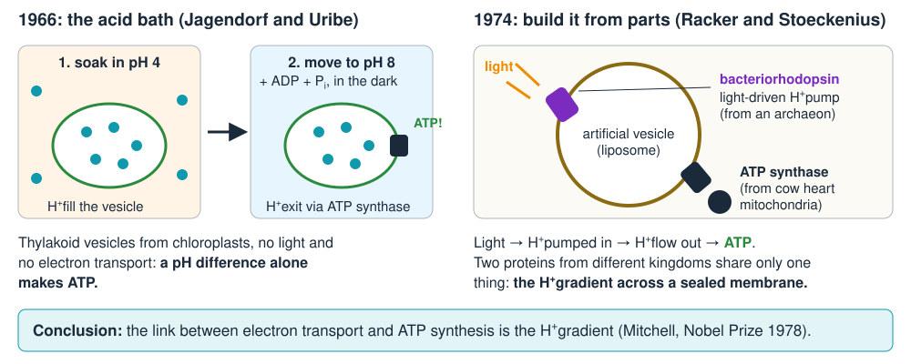
Mitchell’s idea (1961) was rejected for years: everybody looked for a high-energy chemical intermediate. These two experiments showed that the gradient itself is the link.
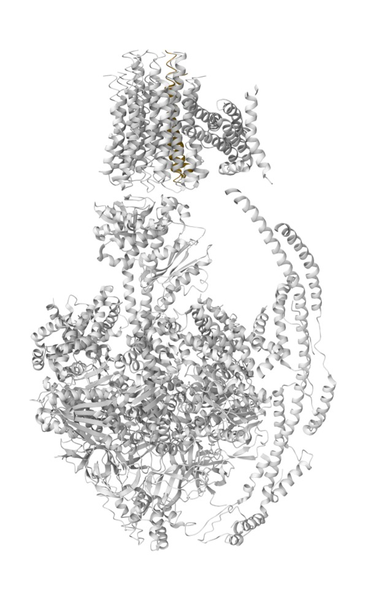
Bovine ATP synthase, cryo-EM (PDB 5ARA). Gold: the c-ring in the membrane; bottom: the α₃β₃ head in the matrix.
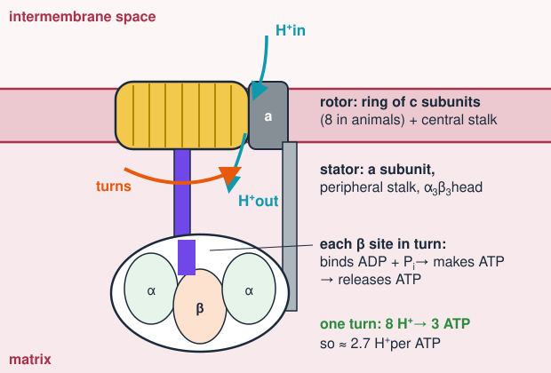
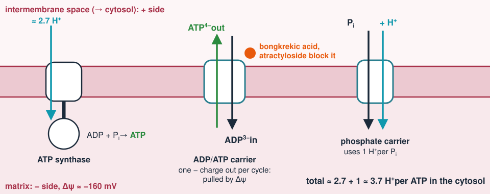
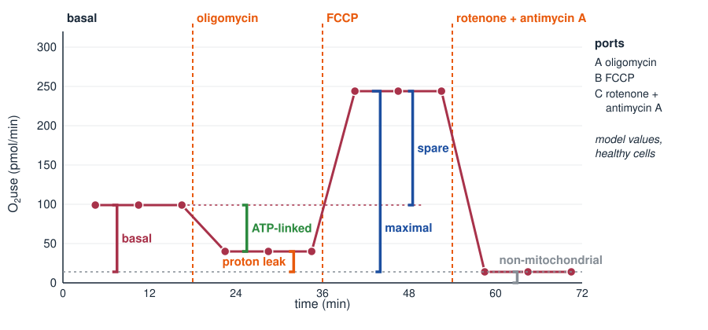
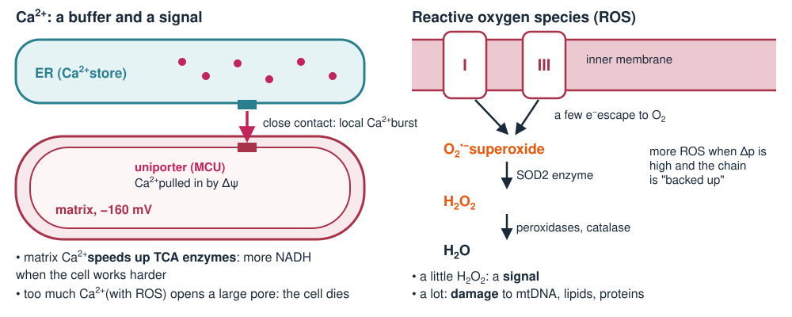
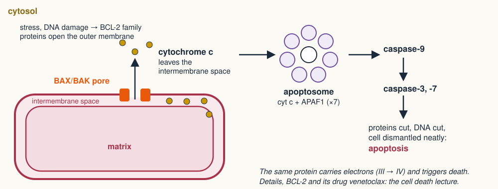
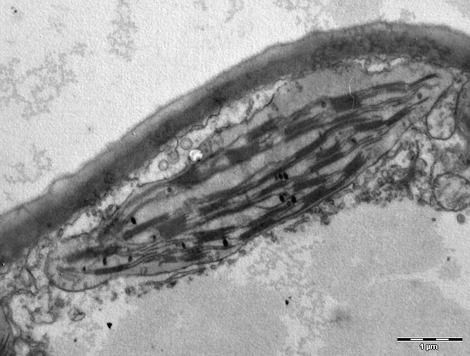
Chloroplast in a leaf cell (Anemone), TEM. The stacked thylakoid membranes fill the inside.
| Mitochondrion | Chloroplast | |
|---|---|---|
| Origin | α-proteobacterium | cyanobacterium |
| Electrons from | NADH (food) | H₂O, driven by light |
| Electrons to | O₂ → H₂O | NADP⁺ → NADPH |
| H⁺ pumped into | intermembrane space | thylakoid lumen |
| Δp mostly | Δψ (voltage) | ΔpH (≈ 3 units) |
| ATP synthase faces | matrix | stroma |
Same principle: electron transport → H⁺ gradient → ATP synthase.
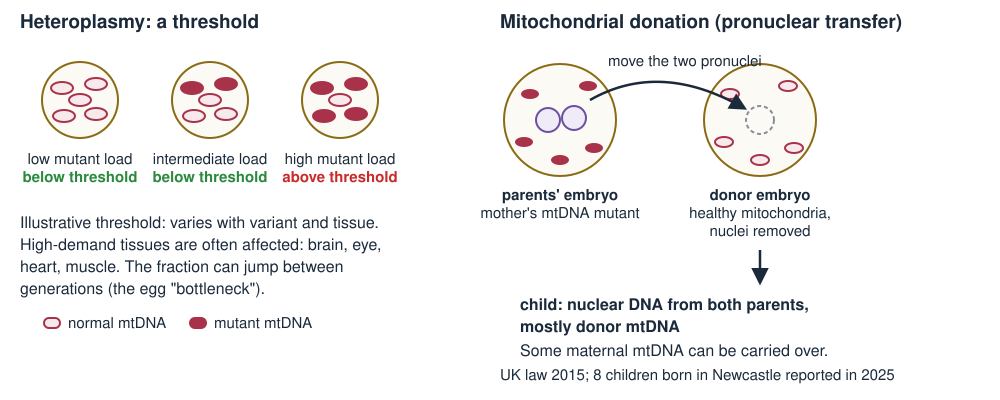
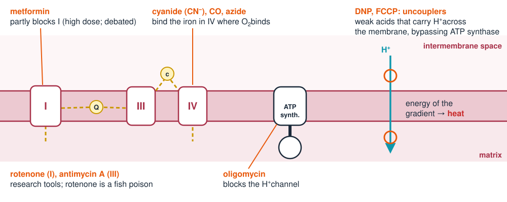
Read more (optional): Alberts et al., Molecular Biology of the Cell, 7th ed., ch. 14.